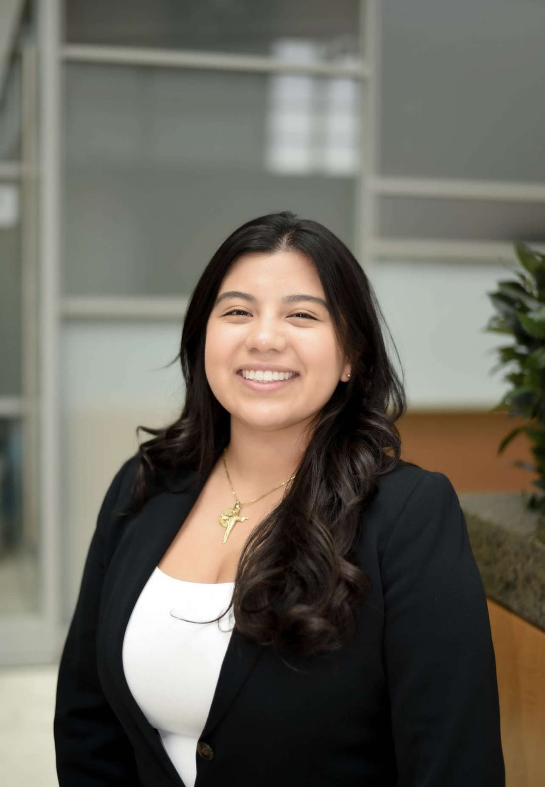
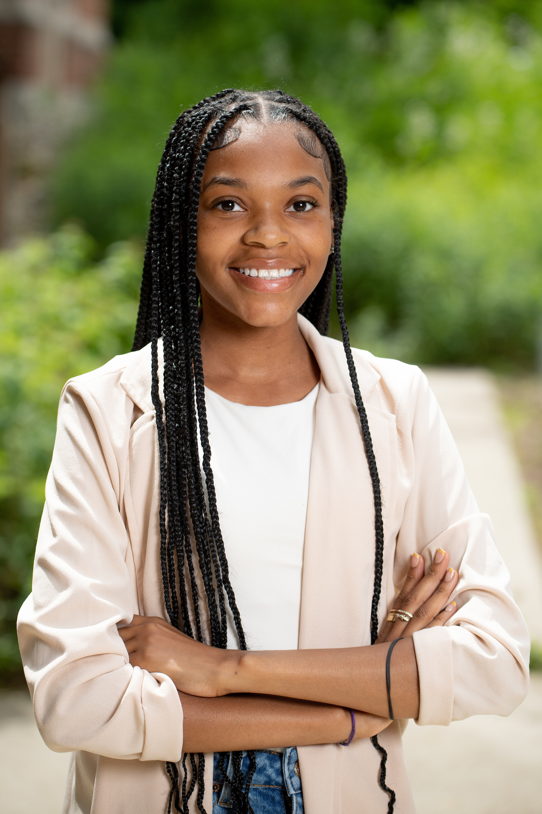

Isabel Lopez
Hi! My name Isabel Lopez. I currently a junior studying Information Analysis at the University of Michigan. After college I hope to get my Master's and become a consultant. Last summer I interned at Accenture working as a software developer helping a company with their website on how to make it more user friendly. This upcoming summer I will be return in their Chicago office to learn even more. I hope to expand my network and learn about more way technology can help change the world.
In my free time I enjoy spending time with my family and friends. They are always there to support and love me. Also, I love going outside and taking walks to relax. I have been trying to travel more because I visiting new places, trying new foods, and understanding other cultures.
Tamariah Davis
Hi there! My name is Tamariah Davis. I am currently a junior studying Information Analysis at the University of Michigan. In summer of 2020, I was a Business System Analyst Intern at University of Michigan Information and Technology Services. Currently, I hold multiple positions as; Social Media and Marketing chair with Support for Incoming Black Students (SIBS), Treasurer for National Society of Black Engineers (NSBE), and Marketing and Media Intern for the Comprehensive Studies Program. Being in these roles allowed me to understand the power of digital media as a tool for community development.
In my free time, I like to spend time with my family, make memories with friends, and join organizations on campus that interest me.